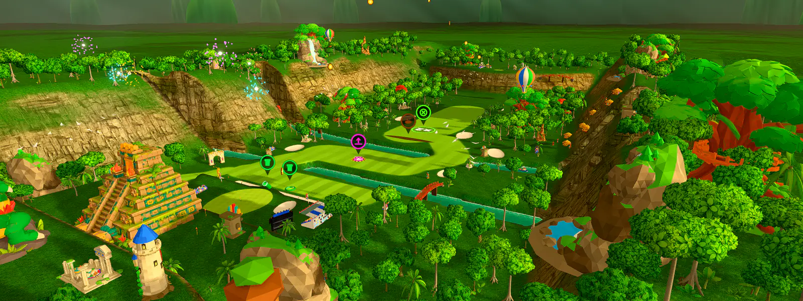

Make it yours
Ask for the hole you want
You do not have to be a programmer to change this game. It is open source, and it is laid out so that an AI coding assistant can find its way round. This page is the practical version of that sentence.
The idea
It's amazing what AI can do these days, if you want to build your own holes, game matches, or anything like that just have Claude clone the code, and ask for what you want.The dad who built Sim Clash
The repository is public under the MIT licence, and it is set up for exactly this: one file per hole, one list of balls, plain-language documents for every part of the game, an orientation file written for AI assistants (CLAUDE.md), and tests that say when something broke. So take your own copy and ask. A new hole for a birthday, a ball that does something silly, a house rule for your regular match.
Any AI assistant that can read and edit a folder of code and run commands in it will do. Nothing here is tied to one of them, and this project is not affiliated with any.
Get set up, once
Install Node.js 22 or newer, and Git. Both are free. Node.js runs the game from its source; Git fetches the code.
Install an AI coding assistant that works in a folder on your PC, the kind that can open files, change them and run commands.
Ask it to fetch and start the game. Something like:
YouClone the Sim Clash repository from GitHub, install it and start the game. Read CLAUDE.md and docs/README.md first so you know your way round.
Or do it by hand, one line at a time:
git clone (the repository address, from its GitHub page) cd sim-clash npm install npm startCheck it plays. The game opens full screen. You do not need your launch monitor for this: press T on a stage for a test swing. F11 leaves full screen.
Know the one command that keeps you honest:
npm test. It runs the project's tests. Ask the assistant to run it after every change, and not to call a job finished until it passes.
Your installed game is safe. Nothing you change in the source folder changes an installed copy of the program; the two just cannot run at the same time, because they use the same ports. If an experiment goes wrong, delete the folder and clone again.
Where things live
You do not need to read any of this code. It helps to know the names, so you can point the assistant at the right place and recognise what it tells you it changed.
| You want | It lives in | How it works |
|---|---|---|
| A hole | tools/arcade-holes/holes/*.jsexplained in docs/arcade-holes.md | One file per hole, plain geometry: the height of the ground as a function, shapes for fairway, green, sand and water, a list of trees and props, the par, the three routes. A builder turns it into a course the game loads and names anything wrong with it (a green too steep, a tee under water). |
| Things to hit | the hole's gadgets listexplained in docs/gadgets.md | Boost rings, bounce pads, speed strips, geysers, bumpers, a warp pipe, a cannon, breakable walls, coin trails, multiplier rings: each a line of data with a position and a few numbers. |
| What lives on it | tools/arcade-holes/life/<hole>.jsexplained in docs/living-world.md | Boats, trains, birds, fish, weather, a dragon: scenery that moves and reacts, and never touches the ball. |
| What stands on it | the hole's props list | 63 kinds of prop are modelled: lighthouses, pyramids, castles, waterfalls, bridges, crowds, blimps. A hole's theme (tropical, canyon, links, volcano, alpine, sakura, jungle, desert, neon, stadium) sets the sky, the ground, the trees and what the water is. |
| A ball or a trick | lib/arcade.js, the list called POWERUPSexplained in docs/arcade.md | Each ball is a few lines: a name, an emoji, a colour, a tagline, and a handful of numbers that bend the physics (drag, lift, gravity, wind, bounce, roll, the size of the cup). The physics that reads them is lib/physics.js. |
| A rule of the match | lib/match.jsexplained in docs/match.md | Formats, knockout, the stroke cap, sudden death, undo: one file with no screen in it, so it is thoroughly tested. |
| A game mode | public/arcade/shell-core.js (the menu), lib/solo.js, lib/practice.js, lib/bullseye-mode.jsexplained in docs/sim-clash-shell.md and docs/modes.md | The main menu is a list. A way of playing the stages alone is a kind of solo run; a mini game on the stage in play is a practice session; a game for two to four on the tour is a format of the match engine; and a game of its own, like Bullseye, is a mode: one file the server registers. |
| The announcer, the sounds | public/arcade/voice/, public/arcade/sfx/explained in docs/arcade-voice.md | Short one-shot files and the table that says when each plays. Replacements must be yours to give away. |
The hole files that exist today, each a working example to copy from:
bullseye-bay.jsBullseye Bay, par 3, tropicalcanyon-run.jsCanyon Run, par 4, canyondragons-spine.jsDragon's Spine, par 4, volcanofrostbite-ridge.jsFrostbite Ridge, par 4, alpineice-pick.jsIce Pick, par 3, alpinelagoon-island.jsLagoon Island, par 3, tropicallighthouse-point.jsLighthouse Point, par 4, linksmidnight-mile.jsMidnight Mile, par 5, neonpharaohs-gate.jsPharaoh's Gate, par 4, desertsakura-garden.jsSakura Garden, par 3, sakurasky-fortress.jsSky Fortress, par 3, canyonsummit-express.jsSummit Express, par 5, alpinetemple-run.jsTemple Run, par 5, junglethunder-dome.jsThunder Dome, par 3, stadiumvolcano-drop.jsVolcano Drop, par 3, volcano
Three requests that work
Each of these was checked against the code as it is today: the pieces it needs exist, and the note says which. They are starting points. Change the words to what you actually want.
A hole
Add a par 3 over a waterfall to the jungle world. Copy the style of the existing holes, give it a safe route and a risky one, build it and check it, then tell me how to play it.
Lands in a new file in tools/arcade-holes/holes/. It works because jungle is one of the game's themes (Temple Run uses it), waterfall is one of the modelled props, and the builder validates the result: node tools/arcade-holes/build.mjs --check --only <its id>. Play it from PRACTICE > FREE PLAY.
A ball
Add a Balloon ball that falls at half speed and gets pushed twice as far by the wind. Common rarity. Add it to the tests that check the list of balls.
Lands as one new entry in POWERUPS in lib/arcade.js. It works because the physics already has both knobs: gravityScale (the Feather ball floats with it) and windScale (the Windcutter ball sets it to zero).
A game
Add a closest-to-the-pin tournament for four players: three balls each on an arena, the nearest ball wins. Model it on Bullseye.
Lands as a new pair of files beside lib/bullseye.js and lib/bullseye-mode.js, one registerMode line in server.js, a screen modelled on public/arcade/bullseye.js and an entry in the main menu's list in public/arcade/shell-core.js. It works because Bullseye already is that shape (one to four players, every ball from an arena's tee, scored by where it finishes) and the game has a small registry for modes of this kind: docs/modes.md, "How a mode plugs in". This is the biggest of the three: expect a few rounds of playing and correcting.
What is a bigger ask. Anything that needs the game to do something it has no notion of yet. "A ball that splits into three on landing" sounds like the Balloon ball, but the game follows one ball per swing everywhere: the physics, the camera, the scoring. An assistant can still build it, but expect several rounds, and expect to be the one who notices what it broke.
How to ask well
- Say what you want to see, not how to code it. "A short par 4 where the brave line is over a pirate ship" is a better request than anything with file names in it.
- Ask for one thing at a time, and play it before asking for the next.
- Make it prove its work. "Run the tests." "Build the hole and show me the map" (
node tools/arcade-holes/preview.mjs --only <id>draws one). "Hit ten test shots at it and tell me where they finish": a running game accepts shots over a local address, which is how the project's own checks hit balls. - Tell it what was wrong in plain words. "The green is hidden behind the cliff from the tee." "A normal drive goes in the water every time." The holes have house rules for exactly these things (wide fairways, big greens, hazards you can see), written down in
docs/arcade-holes.md, and the assistant can read them. - Keep what works. Ask it to save your progress with Git after each thing you are happy with, so a bad idea can be undone.
What it will not do for you
- It cannot tell you whether a hole is fun. Only hitting balls at it does that. Budget more time for playing than for building.
- It cannot test your launch monitor. Test swings stand in for one while you build; the real thing has to be tried in the bay.
- It should not borrow. No sounds, art, logos or course layouts from a commercial game, film or broadcast. Everything in this project has to be something it may give away, and that should go for your version too if you plan to share it.
- It costs what your assistant costs. The game is free; the AI assistant you use to change it has its own terms and prices.